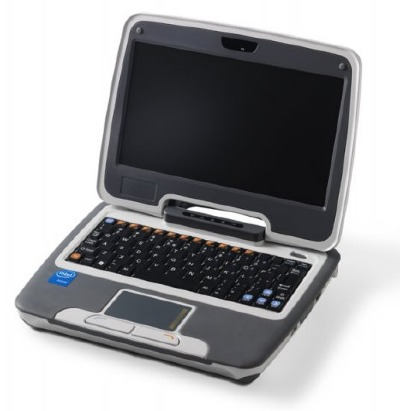

NUESTRO OBJETIVO
 El Objetivo de INTEED es el de proveer a las instituciones educativas de productos, Servicios y Software de máxima Calidad. Por ello nuestra cartera de productos esta cuidadosamente analizada, probada y auditada por profesionales del ramo de la educación. Con ello garantizamos que las inversiones que las instituciones educativas realicen tengan un alto grado de Calidad y Aplicabilidad, facilitando el aumento de eficiencia en la institución educativa y mayor impacto en el proceso de aprendizaje de sus alumnos.
El Objetivo de INTEED es el de proveer a las instituciones educativas de productos, Servicios y Software de máxima Calidad. Por ello nuestra cartera de productos esta cuidadosamente analizada, probada y auditada por profesionales del ramo de la educación. Con ello garantizamos que las inversiones que las instituciones educativas realicen tengan un alto grado de Calidad y Aplicabilidad, facilitando el aumento de eficiencia en la institución educativa y mayor impacto en el proceso de aprendizaje de sus alumnos.

- Diseño resistente para soportar el uso diario de los niños.
- Es pequeño y liviano.
- Fácil de transportar, del tamaño de un libro.
- Integra Aplicaciones, Contenidos y Equipos para el aprendizaje.
- Convierte el aprendizaje en diversión a través de colaboración e interacción.
- Facilita el Aprendizaje Significativo del estudiante.
- Desarrolla la curiosidad y la creatividad personal.
- Despierta el interés por el trabajo escolar.
- Favorece una mejor organización escolar.

| Procesador | Intel Celeron | ||
| Pantalla | Color 7” LCD 800x480 | ||
| Memoria RAM | 512 MB DDR | ||
| Almacenamiento | 2G Flash y ranura SD para expansión | ||
| Batería | 4 horas de duración aprox. | ||
| Conectividad | Ethernet y 802.11b/g WiFi | ||
| Puertos | 2 USB-2.0 | ||
| Audio y Otros | Bocinas y micrófono integrado, salida de bocinas, entrada de micrófono | ||
| Sistema Operativo | Windows XP Home | ||
| Dimensión | 245 x 196 x 44 mm | ||
| Peso | < 1.45 KG | ||
| Teclado/Mouse | Touch Pad con botón derecho e izquierdo integrado al teclado |

- Soporta cualquier campana escolar.
- No activa la campana escolar en las fines de semana, a menos que se requiera
- Permite programar hasta 40 eventos generales de activación y 10 eventos especiales por día, repetibles por semana.
- Configuración de tres tipos de timbres distintivos para la campana escolar.
- No se borra el horario de clases almacenado ni la hora actual, en caso de falla en la alimentación eléctrica.
- Fácil instalación y configuración del equipo.
- Sistema sumamente amigable con el usuario.
- Interruptor auxiliar en caso de requerirse activar la campana escolar de forma manual.
- Fácil programación y modificación de horarios de activación.
- Tiene integrado un Reloj de tiempo real y un calendario semanal.
- Equipo diseñado para larga duración.
- No requiere mantenimiento.
Precio: 3,900 Pesos (IVA incluido)
AULAS INTERACTIVAS
PLATAFORMA EDUCATIVA INTEGRAL ESCUELANET
TALLERES DE ACTUALIZACION DE PERSONAL DOCENTE